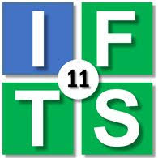
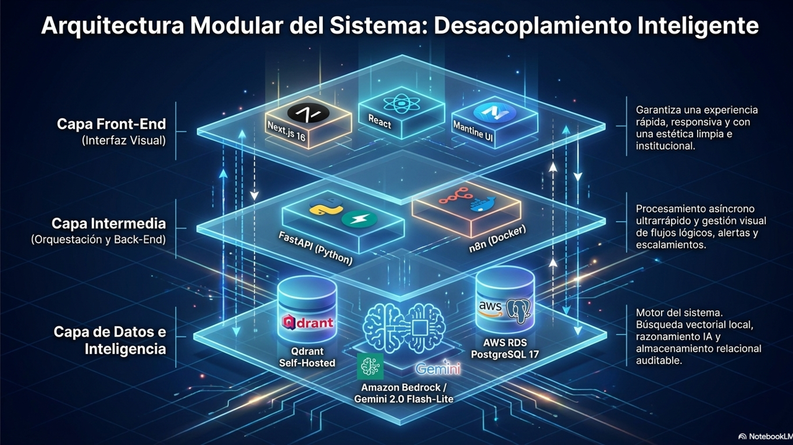

Sistema de Gestión de Conocimiento Dinámico
IFTS 11
umbrellaifts11@gmail.com
Infodets2024!
⚠️ El Problema
Información dispersa
Documentos oficiales sin un punto de acceso unificado
Búsqueda ineficiente
Ciudadanos sin encontrar info actualizada entre múltiples fuentes
Desactualización
Repositorios estáticos sin mejora continua del conocimiento
Sin trazabilidad
Consultas sin respuesta ni proceso de resolución registrado
🏗️ Pilares
Soberanía de Datos
Control absoluto. Qdrant self-hosted e infraestructura propia. El ente público retiene la propiedad de sus datos sin depender de cambios de políticas o tarifas de terceros.
Mejora Continua
El software no es estático. Un motor automatizado detecta vacíos comparando dudas reales con el repositorio, generando un mapa de ruta para nuevas normativas.
Escalabilidad Modular
Diseño preparado para el crecimiento. Escalá de 10 a 10.000 documentos indexados sin modificar una línea de código, operando con eficiencia de costos comprobada.
🖥️ Arquitectura de Interfaz
Blueprint técnico del asistente — lenguaje natural, validación legal y autenticación segura
Lenguaje Natural
Procesamiento con Gemini 3072d. Embeddings semánticos que entienden consultas coloquiales y técnicas.
Validación Legal
Citas a documentos oficiales con scoring de confianza. Cada respuesta tiene trazabilidad de fuente.
Autenticación Segura
AWS Cognito + JWT custom HS256. Sesiones de 8h sin latencia. 11 permisos granulares por rol.
🔒 Protocolo de Seguridad
Cascada de Degradación — la IA nunca adivina, siempre valida
Nivel 0 — Docs oficiales
Respuesta inmediata con citas a documentos. Fuente rastreable vía Qdrant + Gemini.
Nivel 1 — URLs oficiales
Scraping con filtro de relevancia. Respuesta con advertencia de confianza reducida + ticket silencioso para que administradores evalúen la respuesta y aprueben el aprendizaje de la IA.
Nivel 2 — Búsqueda web
Serper API + verificación. Respuesta cautelosa + ticket silencioso para que administradores evalúen y aprueben el aprendizaje de la IA.
Nivel 3 — Escalamiento humano
Ticket de consulta a operador vía n8n. El operador responde la consulta y aprueba el aprendizaje. Interfaz de evaluación centralizada para administradores.
📥 Gobernanza de Datos: Pipeline de Ingesta Controlada
Ingesta segura — del documento oficial al conocimiento de la IA en 60 segundos
Paso 1: Portal del Usuario Calificado
Un funcionario habilitado sube el documento oficial (PDF, Ley, Manual) mediante un formulario seguro en el sistema, indicando su jerarquía institucional. Solo personal autorizado con credenciales verificadas puede iniciar el proceso de ingesta.
Paso 2: Procesamiento Invisible (FastAPI)
Limpieza en backend. El sistema extrae el texto, lo fragmenta en bloques lógicos jerárquicos (chunks Parent-Child de 300 a 1000 tokens) y notifica al orquestador n8n para enviar la solicitud de aprobación al administrador.
Paso 3: Activación Instantánea y Gobernada
El administrador recibe la alerta y aprueba la ingesta con un solo clic. Los vectores se inyectan en Qdrant y la IA aprende la nueva normativa en menos de 60 segundos. Cada ingesta queda registrada en el panel de auditoría.
Arquitectura Técnica
Arquitectura · Seguridad · Motor · Pipeline · Escalabilidad

🛡️ Seguridad Zero Trust
Arquitectura de Confianza Cero — nadie entra sin autorización
AWS Cognito
User Pool con autenticación USER_PASSWORD_AUTH. MFA y verificación en cada acceso.
JWT Custom HS256
Token de 8h de duración. Evita latencia de Cognito en cada request. Sesión persistente.
RBAC — 11 Permisos
Matriz de perfiles: Ciudadano, Usuario Interno, Administrador. Control granular por endpoint.
Middleware Estricto
require_permiso() en cada endpoint. Verifica JWT + permiso antes de ejecutar cualquier acción.
⚡ El Motor Cognitivo: Resiliencia y Alta Disponibilidad
Gemini 2.0 Flash-lite
Modelo principal seleccionado por su velocidad extrema y bajo costo operativo para razonamiento lógico.
¿Pico de demanda o límite de API (Error 429) superado?
Respuesta Entregada Inmediatamente
Desvío a Groq (Llama-3.3-70b)
Tráfico redirigido en milisegundos para absorber la sobrecarga.
🧠 Pipeline RAG — Del Query a la Respuesta
Recuperación híbrida con HyDE, Query Expansion y Reranking vía Cohere
Usuario
Cohere 1024d
cos≥0.95/24h
Qdrant+HyDE+QExp
Cohere v3.5
umbral 0.40
Flash-lite
fallback
📈 Escalabilidad Sin Fricción
De 10 a 10.000+ documentos, la arquitectura crece sin fricción
Frontend
Next.js 16 en Docker independiente. Build multi-stage: imagen optimizada 100MB. Sin depender del backend para servir.
Backend
FastAPI como servicio systemd. Recarga con sudo systemctl restart fastapi. Zero downtime en migraciones Alembic.
Qdrant
Self-hosted en Docker. Datos persistidos en volumen. Sin vendor lock-in (vs Pinecone ~$70/mes). Si supera 10K chunks → escalar a t4g.medium.
n8n + Automación
Workflows en Docker. Orquesta ingesta, resolución de consultas y notificaciones. Desacoplado del flujo principal RAG.
Síntesis y Estado del Proyecto
Motor Mejora Continua · Signos Vitales · Paradigma · Próximos Pasos
El Motor de Mejora Continua: Transformando Vacíos en Gobernanza
Un ciudadano consulta un tema (ej. "Subsidios de Vivienda 2026") que no existe en la base documental local (confianza < 70%).
El bot proporciona información externa aplicando salvaguardas legales, aclarando explícitamente: "He encontrado esta información en fuentes externas (no oficiales)".
El orquestador interno (n8n) detecta la anomalía en milisegundos y genera un reporte automático integrado al flujo de trabajo del equipo.
El panel de control compila métricas y muestra los hot topics no resueltos. Envía notificaciones accionables: "5 usuarios preguntaron por Tema X. Sugerencia: Subir normativa correspondiente".
💚 Signos Vitales del Proyecto
El MVP ya late — desplegado y operativo en AWS
🌟 Cambio de Paradigma
Del software institucional estático al Sistema Vivo
Qdrant Self-hosted ≠ Pinecone
Datos soberanos sin depender de SaaS externo. Ahorro ~$70/mes vs Pinecone. Escala a t4g.medium si >10K vectores.
JWT Custom 8h ≠ Cognito directo
Token firmado HS256 local. Evita latencia de Cognito en cada request. Renovación cada 8h con refresh token.
FastAPI directo ≠ n8n para PDFs
Procesamiento de PDFs vía FastAPI (más control, menor latencia). n8n orquesta notificaciones y flujos administrativos.
🚀 Próximos Pasos
El camino a producción — lo que falta y lo que viene
Seguridad
- SSL + nginx — HTTPS, dominio y reverse proxy
- Rate limiting — proteger endpoints por usuario/IP
- Secrets Manager — migrar .env a Parameter Store
Pipeline RAG
- Parent-Child Retrieval — 1500/500 chars
- Cache Semántico — cos≥0.95, TTL 24h
- Embedding fallback — si Cohere falla
Observabilidad
- Dashboard integral — latencia, calidad, tickets
- Alertas proactivas — Slack/email si falla
- Audit logging — trazabilidad de admins
Escalamiento
- Qdrant t4g.medium — 4GB RAM si >10K chunks
- Uvicorn multi-worker — 4 workers Gunicorn
- ALB + CloudFront — CDN y alta disponibilidad
On-Premise
- Docker portátil — mismo stack en servidor físico
- VPN + red interna — sin exponer puertos
- Modo offline — fallback local si no hay APIs
Testing
- Load testing — k6 para throughput y cuellos
- Health checks — backend + Qdrant + RDS
- A/B testing — estrategias de retrieval en vivo
🙏 Gracias
INFODETS — Sistema de Gestión de Conocimiento Dinámico
IFTS 11